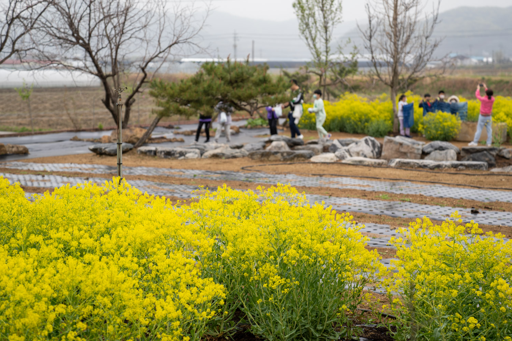
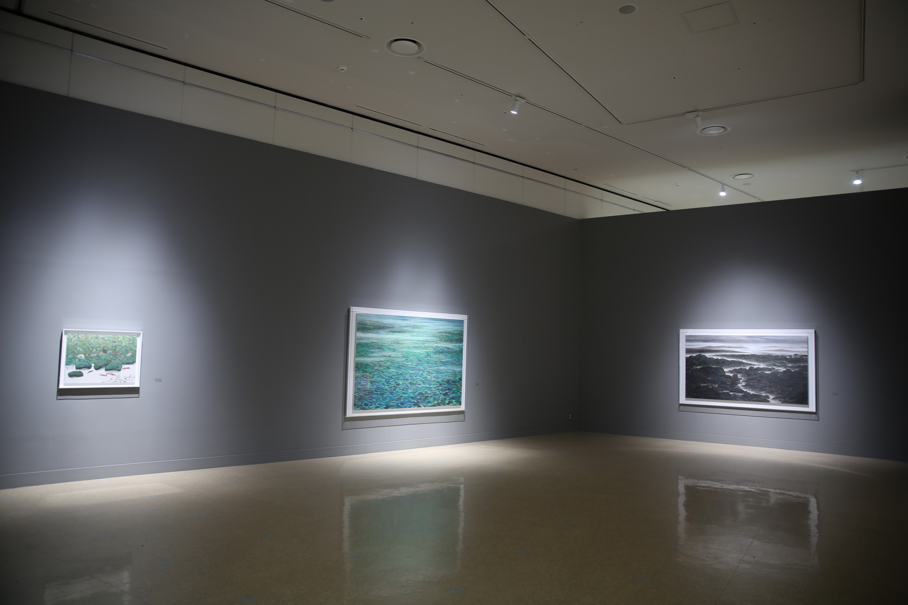

천안투어
A place of Enjoyment!
you can experience excitement, inspiration and hamony through the local festiveals!
천안 소개 영역


천안명소 영역
"거래의 얼"과 "한국의 빛"이 살아있는 뜨거운 역사의 현장
"거래의 얼"과 "한국의 빛"이 살아있는 뜨거운 역사의 현장
"거래의 얼"과 "한국의 빛"이 살아있는 뜨거운 역사의 현장
"거래의 얼"과 "한국의 빛"이 살아있는 뜨거운 역사의 현장
여행리포트 영역

제목: 어린이농촌체험교실
날짜: 2023-03-10
내용: 어린이 농촌체험교실은 어린이들에게 자연과 농촌의 삶을 경험하고 배우는 기회를 제공하여, 지속가능한 미래를 위한 인식과 교육의 기반을 마련하는 것에 중요성이 있습니다.
날짜: 2023-03-10
내용: 어린이 농촌체험교실은 어린이들에게 자연과 농촌의 삶을 경험하고 배우는 기회를 제공하여, 지속가능한 미래를 위한 인식과 교육의 기반을 마련하는 것에 중요성이 있습니다.

제목: 홍대용과학관에서 우주여행 떠나볼까요?
날짜: 2023-04-10
내용: 비오는 주말 천안 실내 가볼만한 곳을 찾아 홍대용과학관을 다녀왔습니다. 주차장도 넓고 주말인데도 많이 붐비지 않아 편안하게 관람하고 체험할 수 있었습니다.
날짜: 2023-04-10
내용: 비오는 주말 천안 실내 가볼만한 곳을 찾아 홍대용과학관을 다녀왔습니다. 주차장도 넓고 주말인데도 많이 붐비지 않아 편안하게 관람하고 체험할 수 있었습니다.

제목: 시립미술관 전시전
날짜: 2023-04-11
내용: 람의 감정이라는 것은 복잡하고 미묘한 특징이 있다. 무언가를 그리워하는 것도 사랑하는 것도 기뻐하는 것의 반대편의 다른 감정이 있다.
날짜: 2023-04-11
내용: 람의 감정이라는 것은 복잡하고 미묘한 특징이 있다. 무언가를 그리워하는 것도 사랑하는 것도 기뻐하는 것의 반대편의 다른 감정이 있다.

제목: 천안흥타령춤축제2023, 거리퍼레이드 현장속으로
날짜: 2023-05-01
내용: 천안흥타령춤축제2023의 하이라이트는 뭐니뭐니해도 거리퍼레이드!!7시부터 방죽안 오거리부터 터미널 사거리까지 진행되었습니다.
날짜: 2023-05-01
내용: 천안흥타령춤축제2023의 하이라이트는 뭐니뭐니해도 거리퍼레이드!!7시부터 방죽안 오거리부터 터미널 사거리까지 진행되었습니다.

제목: 삼거리갤러리 놀러오세요~!
날짜: 2023-06-10
내용: 꽃이 피고 들판이 초록으로 물들어 주말마다 바삐 나들이를 다니느라 마음은 힐링이지만 어느순간 조금은 더 여유로운 시간을 보내고 싶은 마음이 스멀스멀 피어오르는 지금.
날짜: 2023-06-10
내용: 꽃이 피고 들판이 초록으로 물들어 주말마다 바삐 나들이를 다니느라 마음은 힐링이지만 어느순간 조금은 더 여유로운 시간을 보내고 싶은 마음이 스멀스멀 피어오르는 지금.
제목: 천안 흑성산의 아침 풍경
날짜: 2023-06-11
내용: 시원한 동풍이 불어오는 새벽 폭염에 시달리던 지친 몸을 이끌고 시원한 가을바람이 불어오는 흑성산 전망대에 올랐습니다.
날짜: 2023-06-11
내용: 시원한 동풍이 불어오는 새벽 폭염에 시달리던 지친 몸을 이끌고 시원한 가을바람이 불어오는 흑성산 전망대에 올랐습니다.